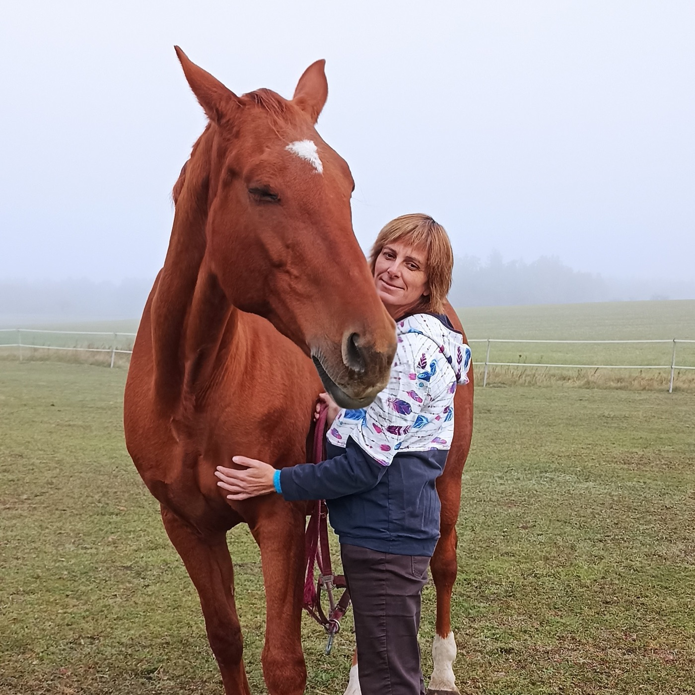
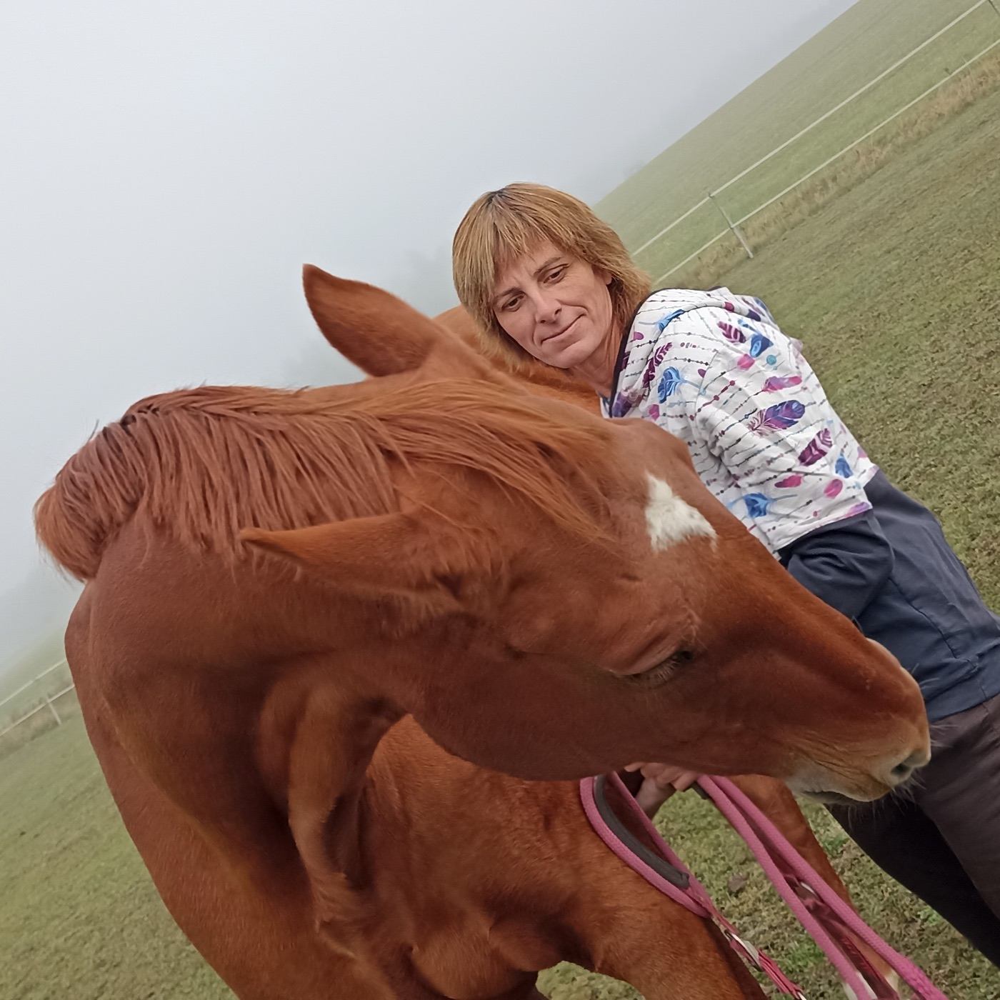
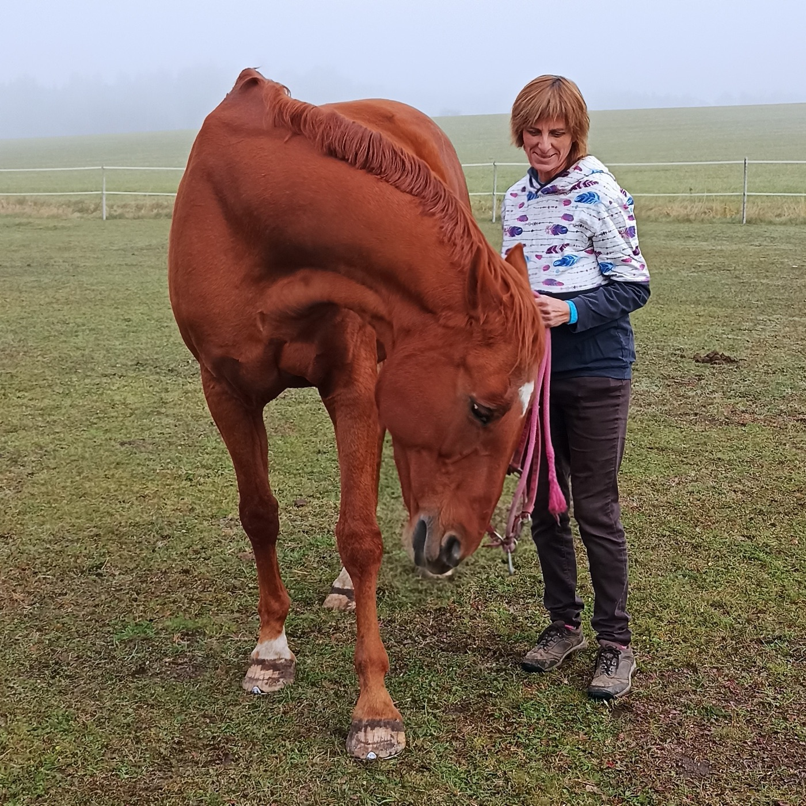

Už jste zažili svého koně plakat?
Dopřejte mu toto hluboké uvolnění.

Jemné terapie nepomáhají jen lidem. Koně na Bowenovo ošetření reagují s důvěrou — a často vděčněji než my.
Bowenova technika pracuje s jemnými hmaty přes svaly a šlachy, které dávají tělu impuls k uvolnění a obnově rovnováhy. Pomáhá při ztuhlosti a nerovnoměrném pohybu, po zátěži či při zotavení, při změnách chování pod sedlem — a také jako zklidňující péče pro koně ve stresu.

Přijedu za vámi do stáje. Koně si nejdřív nechám „přečíst“ — ošetření probíhá v klidu, v prostředí, které kůň zná, šetrně, bez násilí a v tempu, které si kůň určí sám. Délka se řídí tím, co kůň ten den přijme.
Ošetření koní nenahrazuje veterinární péči. Termín, dojezd i cenu domluvíme individuálně podle vzdálenosti a počtu koní.

Hluboká relaxace pro Vaše koně.